opcode
按顺序，本章应该讲解 parser 相关的内容。
之前提到，parser 模块将语法分析与代码生成揉合在一起，为了更容易理解 parser 的功能， 先对最终生成的代码 opcode 做一些了解，到时就可以带着目的去阅读。
opcode 字节码，是编译阶段的最终结果。 类比来看，C 编译为机器码，由机器执行；lua 编译为 opcode 由 vm 执行。
可以说，opcode 是上层 lua 代码与 vm 的中间层，是语义的约定。 本章关注 opcode 的表示方式及含义。
1 format
所有 opcode 都是定长的，4 bytes 32 bits，单个指令用 unsigned int 表示。
84: /* 85: ** type for virtual-machine instructions 86: ** must be an unsigned with (at least) 4 bytes (see details in lopcodes.h) 87: */ 88: typedef lu_int32 Instruction;
指令内部可分为类型和参数两部分，根据参数的安排方式，所有指令可分为 3 类操作模式。
31: enum OpMode {iABC, iABx, iAsBx}; /* basic instruction format */
- iABC，接受 A B C 三个参数
- iABx，接受 A Bx 两个参数
- iAsBx，接受 A sBx 两个参数
A B C Bx 是无符号数，而 sBx 是有符号数（s 即 signed）。
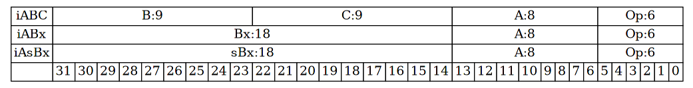
三种类型的指令在 32 bits 的空间中进行如下的划分
- Op 表示指令类型，占据 6 bits，在最低位
- A C B 分别占据 8 9 9 bits，从低位到高位排列
- Bx 占据 B C 两者的空间
- sBx 和 Bx 占据的空间相同，不过解析为有符号数
34: /* 35: ** size and position of opcode arguments. 36: */ 37: #define SIZE_C 9 38: #define SIZE_B 9 39: #define SIZE_Bx (SIZE_C + SIZE_B) 40: #define SIZE_A 8 41: 42: #define SIZE_OP 6 43: 44: #define POS_OP 0 45: #define POS_A (POS_OP + SIZE_OP) 46: #define POS_C (POS_A + SIZE_A) 47: #define POS_B (POS_C + SIZE_C) 48: #define POS_Bx POS_C
2 param
A C B 的长度分别是 8 9 9 bits，都解析为无符号数。 Bx 占据 18 位，解析为无符号数。 sBx 和 Bx 占据同一空间，但是解析为有符号数。
不同参数表示不同的范围。
| param | len(bits) | range |
|---|---|---|
| A | 8 | 0 -> 28 - 1 |
| C | 9 | 0 -> 29 - 1 |
| B | 9 | 0 -> 29 - 1 |
| Bx | 18 | 0 -> 218 - 1 |
| sBx | 18 | -(217 - 1) -> 217 - 1 |
65: #define MAXARG_A ((1<<SIZE_A)-1) 66: #define MAXARG_B ((1<<SIZE_B)-1) 67: #define MAXARG_C ((1<<SIZE_C)-1)
57: #define MAXARG_Bx ((1<<SIZE_Bx)-1) 58: #define MAXARG_sBx (MAXARG_Bx>>1) /* `sBx' is signed */
lua 并不用反码补码的逻辑来理解 sBx，而只是将同样字节表示的 Bx 减去 offset 得到 sBx。
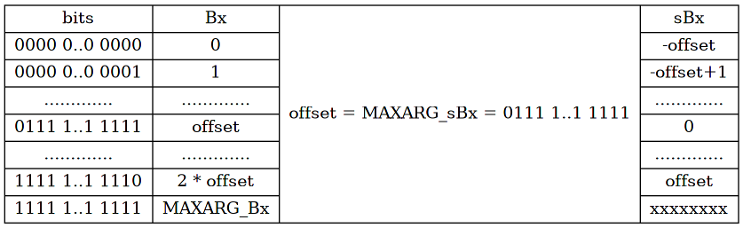
offset 就是 sBx 的最大值，所以 1111 1..1 1111 对于 sBx 是没有意义的。
3 kind
指令类型共有 38 种，用 enum OpCode 标识，
146: /* 147: ** grep "ORDER OP" if you change these enums 148: */ 149: 150: typedef enum { 151: /*---------------------------------------------------------------------- 152: name args description 153: ------------------------------------------------------------------------*/ 154: OP_MOVE,/* A B R(A) := R(B) */ 155: OP_LOADK,/* A Bx R(A) := Kst(Bx) */ 156: OP_LOADBOOL,/* A B C R(A) := (Bool)B; if (C) pc++ */ 157: OP_LOADNIL,/* A B R(A) := ... := R(B) := nil */ 158: OP_GETUPVAL,/* A B R(A) := UpValue[B] */ 159: 160: OP_GETGLOBAL,/* A Bx R(A) := Gbl[Kst(Bx)] */ 161: OP_GETTABLE,/* A B C R(A) := R(B)[RK(C)] */ 162: 163: OP_SETGLOBAL,/* A Bx Gbl[Kst(Bx)] := R(A) */ 164: OP_SETUPVAL,/* A B UpValue[B] := R(A) */ 165: OP_SETTABLE,/* A B C R(A)[RK(B)] := RK(C) */ 166: 167: OP_NEWTABLE,/* A B C R(A) := {} (size = B,C) */ 168: 169: OP_SELF,/* A B C R(A+1) := R(B); R(A) := R(B)[RK(C)] */ 170: 171: OP_ADD,/* A B C R(A) := RK(B) + RK(C) */ 172: OP_SUB,/* A B C R(A) := RK(B) - RK(C) */ 173: OP_MUL,/* A B C R(A) := RK(B) * RK(C) */ 174: OP_DIV,/* A B C R(A) := RK(B) / RK(C) */ 175: OP_MOD,/* A B C R(A) := RK(B) % RK(C) */ 176: OP_POW,/* A B C R(A) := RK(B) ^ RK(C) */ 177: OP_UNM,/* A B R(A) := -R(B) */ 178: OP_NOT,/* A B R(A) := not R(B) */ 179: OP_LEN,/* A B R(A) := length of R(B) */ 180: 181: OP_CONCAT,/* A B C R(A) := R(B).. ... ..R(C) */ 182: 183: OP_JMP,/* sBx pc+=sBx */ 184: 185: OP_EQ,/* A B C if ((RK(B) == RK(C)) ~= A) then pc++ */ 186: OP_LT,/* A B C if ((RK(B) < RK(C)) ~= A) then pc++ */ 187: OP_LE,/* A B C if ((RK(B) <= RK(C)) ~= A) then pc++ */ 188: 189: OP_TEST,/* A C if not (R(A) <=> C) then pc++ */ 190: OP_TESTSET,/* A B C if (R(B) <=> C) then R(A) := R(B) else pc++ */ 191: 192: OP_CALL,/* A B C R(A), ... ,R(A+C-2) := R(A)(R(A+1), ... ,R(A+B-1)) */ 193: OP_TAILCALL,/* A B C return R(A)(R(A+1), ... ,R(A+B-1)) */ 194: OP_RETURN,/* A B return R(A), ... ,R(A+B-2) (see note) */ 195: 196: OP_FORLOOP,/* A sBx R(A)+=R(A+2); 197: if R(A) <?= R(A+1) then { pc+=sBx; R(A+3)=R(A) }*/ 198: OP_FORPREP,/* A sBx R(A)-=R(A+2); pc+=sBx */ 199: 200: OP_TFORLOOP,/* A C R(A+3), ... ,R(A+2+C) := R(A)(R(A+1), R(A+2)); 201: if R(A+3) ~= nil then R(A+2)=R(A+3) else pc++ */ 202: OP_SETLIST,/* A B C R(A)[(C-1)*FPF+i] := R(A+i), 1 <= i <= B */ 203: 204: OP_CLOSE,/* A close all variables in the stack up to (>=) R(A)*/ 205: OP_CLOSURE,/* A Bx R(A) := closure(KPROTO[Bx], R(A), ... ,R(A+n)) */ 206: 207: OP_VARARG/* A B R(A), R(A+1), ..., R(A+B-1) = vararg */ 208: } OpCode; 209: 210: 211: #define NUM_OPCODES (cast(int, OP_VARARG) + 1)
注释描述了相应类型的指令所接受的参数和功能。
4 model
想要了解指令具体的功能，就需要提前对 vm 的执行模型有一些了解。
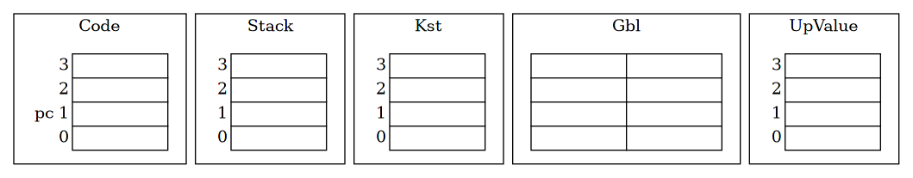
vm 为编程语言提供了更大的灵活性，原因就在于这个虚拟的机器内部可以自由构造，而不用面对一成不变的 x86 架构。
不管 vm 如何设计，目的都是执行 opcode，实现其描述的语义。 lua 实现的 vm 主要由图中的几个部分构成。
4.1 Code & pc
vm 在执行时，必须要有执行的蓝图，即输入的字节码。
Code 就表示 vm 要执行的字节码，在内部以指令数组的形式来存储。
pc 的概念都不陌生，用于索引当前正在执行的指令。
4.2 Stack
Stack 时刻记录着 vm 执行指令时的状态。
lua 中的 vm 比较特殊，存在寄存器的概念，但是将寄存器的存储区域放在栈中（准确地说是栈底）。
4.3 Kst
这是一个辅助结构，用于记录 lua 代码中出现的常量，在指令中通过 kst 中的索引来使用这些常量。
4.4 Gbl
Gbl 是全局表，以 table 结构来实现，对应 lua 语言中“全局”的概念，比如全局变量，就存储在这里。
4.5 UpValue
记录闭包引用的上值，之后再详细解释。
5 meaning
对应 vm 模型的粗略了解，下面来看指令后的功能描述表达了什么含义。
R(A) 表示索引为 A 的寄存器，因为寄存器存储在栈中，所以 R(A) 直接索引栈中的空间。
寄存器是可读写的，如果出现在赋值左边，表示寄存器的位置；出现在赋值右边，表示使用相应位置的值。
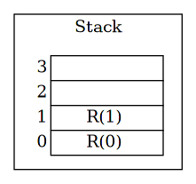
Kst(Bx) 表示索引为 Bx 的常量，从 kst 表中取值。
常量表在执行时是只读的。
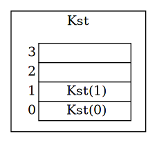
RK(B) 根据 B 的大小，用于索引寄存器/常量，只用于只读。
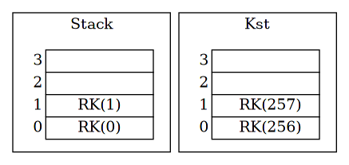
这里和之前参数空间的长度安排巧妙地联系在一起。
A B C 三个参数，长度分别为 8 9 9 bits。 在 opcode 的整体设计中，没有 RK(A)，只有 RK(B) RK(C)。
所以使用 B C 中比 A 多出的 1 个高位 bit，用于辨别 RK 表示的是 R 还是 K。
| R/K | bits | range |
|---|---|---|
| R | 0…….. | 0 -> 255 |
| K | 1…….. | 256 -> 511 |
这样，相应的宏也就不难理解。
114: /* 115: ** Macros to operate RK indices 116: */ 117: 118: /* this bit 1 means constant (0 means register) */ 119: #define BITRK (1 << (SIZE_B - 1)) 120: 121: /* test whether value is a constant */ 122: #define ISK(x) ((x) & BITRK) 123: 124: /* gets the index of the constant */ 125: #define INDEXK(r) ((int)(r) & ~BITRK) 126: 127: #define MAXINDEXRK (BITRK - 1) 128: 129: /* code a constant index as a RK value */ 130: #define RKASK(x) ((x) | BITRK)
Gbl 是全局表，Stack 和 Kst 都以数组来实现，所以只需要整数索引，而 Gbl 是真正的表，
用 table 来实现，这意味着索引可以是除 nil 外的任意值。
所以在索引使用 Gbl 时，通常使用间接的方式。
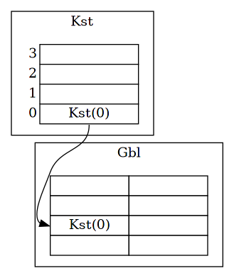
UpValue 表和 Kst 类似，以数组表示，用整数索引，但是可读写。
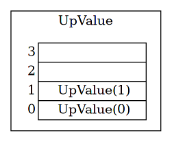
有了上面符号的理解，读者应该能读懂大部分指令所表达的功能。
本质上，vm 的运行过程就是不断的执行指令，操作不同区域的数据的过程。
下面列几个简单示例。
5.1 move
154: OP_MOVE,/* A B R(A) := R(B) */
move 很容易理解，直接进行寄存器间的赋值。
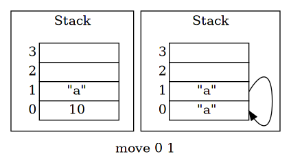
5.2 getglobal
160: OP_GETGLOBAL,/* A Bx R(A) := Gbl[Kst(Bx)] */
Gbl 因为不使用整数索引，所以在引用其中元素时，需要 Kst 作间接的引用。
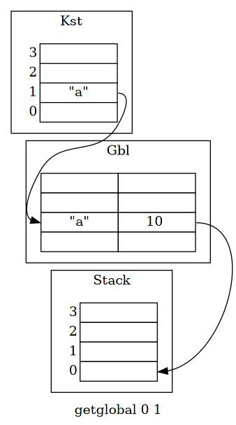
5.3 add
171: OP_ADD,/* A B C R(A) := RK(B) + RK(C) */
add 是二元运算，其中使用 RK 来引用。
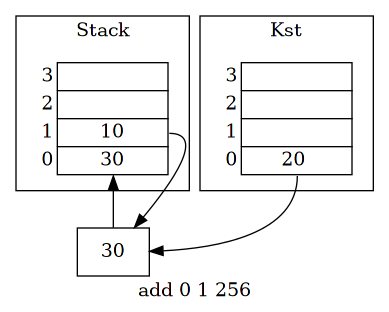
5.4 more
ChunkSpy 的作者对于 opcode 有更深刻的理解，在其发布 ChunkSpy 程序的时候，也附带了描述 opcode 的文档1， 推荐读者详细阅读。
6 meta
opcode 模块除了定义指令的类型和格式，同时也记录了指令的其它信息，用于辅助代码生成。
59: #define opmode(t,a,b,c,m) (((t)<<7) | ((a)<<6) | ((b)<<4) | ((c)<<2) | (m)) 60: 61: const lu_byte luaP_opmodes[NUM_OPCODES] = { 62: /* T A B C mode opcode */ 63: opmode(0, 1, OpArgR, OpArgN, iABC) /* OP_MOVE */ 64: ,opmode(0, 1, OpArgK, OpArgN, iABx) /* OP_LOADK */ 65: ,opmode(0, 1, OpArgU, OpArgU, iABC) /* OP_LOADBOOL */ 66: ,opmode(0, 1, OpArgR, OpArgN, iABC) /* OP_LOADNIL */ 67: ,opmode(0, 1, OpArgU, OpArgN, iABC) /* OP_GETUPVAL */ 68: ,opmode(0, 1, OpArgK, OpArgN, iABx) /* OP_GETGLOBAL */ 69: ,opmode(0, 1, OpArgR, OpArgK, iABC) /* OP_GETTABLE */ 70: ,opmode(0, 0, OpArgK, OpArgN, iABx) /* OP_SETGLOBAL */ 71: ,opmode(0, 0, OpArgU, OpArgN, iABC) /* OP_SETUPVAL */ 72: ,opmode(0, 0, OpArgK, OpArgK, iABC) /* OP_SETTABLE */ 73: ,opmode(0, 1, OpArgU, OpArgU, iABC) /* OP_NEWTABLE */ 74: ,opmode(0, 1, OpArgR, OpArgK, iABC) /* OP_SELF */ 75: ,opmode(0, 1, OpArgK, OpArgK, iABC) /* OP_ADD */ 76: ,opmode(0, 1, OpArgK, OpArgK, iABC) /* OP_SUB */ 77: ,opmode(0, 1, OpArgK, OpArgK, iABC) /* OP_MUL */ 78: ,opmode(0, 1, OpArgK, OpArgK, iABC) /* OP_DIV */ 79: ,opmode(0, 1, OpArgK, OpArgK, iABC) /* OP_MOD */ 80: ,opmode(0, 1, OpArgK, OpArgK, iABC) /* OP_POW */ 81: ,opmode(0, 1, OpArgR, OpArgN, iABC) /* OP_UNM */ 82: ,opmode(0, 1, OpArgR, OpArgN, iABC) /* OP_NOT */ 83: ,opmode(0, 1, OpArgR, OpArgN, iABC) /* OP_LEN */ 84: ,opmode(0, 1, OpArgR, OpArgR, iABC) /* OP_CONCAT */ 85: ,opmode(0, 0, OpArgR, OpArgN, iAsBx) /* OP_JMP */ 86: ,opmode(1, 0, OpArgK, OpArgK, iABC) /* OP_EQ */ 87: ,opmode(1, 0, OpArgK, OpArgK, iABC) /* OP_LT */ 88: ,opmode(1, 0, OpArgK, OpArgK, iABC) /* OP_LE */ 89: ,opmode(1, 1, OpArgR, OpArgU, iABC) /* OP_TEST */ 90: ,opmode(1, 1, OpArgR, OpArgU, iABC) /* OP_TESTSET */ 91: ,opmode(0, 1, OpArgU, OpArgU, iABC) /* OP_CALL */ 92: ,opmode(0, 1, OpArgU, OpArgU, iABC) /* OP_TAILCALL */ 93: ,opmode(0, 0, OpArgU, OpArgN, iABC) /* OP_RETURN */ 94: ,opmode(0, 1, OpArgR, OpArgN, iAsBx) /* OP_FORLOOP */ 95: ,opmode(0, 1, OpArgR, OpArgN, iAsBx) /* OP_FORPREP */ 96: ,opmode(1, 0, OpArgN, OpArgU, iABC) /* OP_TFORLOOP */ 97: ,opmode(0, 0, OpArgU, OpArgU, iABC) /* OP_SETLIST */ 98: ,opmode(0, 0, OpArgN, OpArgN, iABC) /* OP_CLOSE */ 99: ,opmode(0, 1, OpArgU, OpArgN, iABx) /* OP_CLOSURE */ 100: ,opmode(0, 1, OpArgU, OpArgN, iABC) /* OP_VARARG */ 101: };
这些信息用 1 byte 8 bits 来记录，其中
- T，表示指令是否有 test 操作
- A，表示是否修改了 R(A)
- mode，表示指令属于 iABC/iABx/iAsBx 的哪一种
- B C，表示 B C 参数的使用方式
- OpArgN，未使用
- OpArgU，使用
- OpArgR，作为寄存器索引/跳转偏移量
- OpArgK，作为常量索引/RK索引
/* ** masks for instruction properties. The format is: ** bits 0-1: op mode ** bits 2-3: C arg mode ** bits 4-5: B arg mode ** bit 6: instruction set register A ** bit 7: operator is a test */ enum OpArgMask { OpArgN, /* argument is not used */ OpArgU, /* argument is used */ OpArgR, /* argument is a register or a jump offset */ OpArgK /* argument is a constant or register/constant */ };
相应地，相关的宏就不难理解。
#define getOpMode(m) (cast(enum OpMode, luaP_opmodes[m] & 3)) #define getBMode(m) (cast(enum OpArgMask, (luaP_opmodes[m] >> 4) & 3)) #define getCMode(m) (cast(enum OpArgMask, (luaP_opmodes[m] >> 2) & 3)) #define testAMode(m) (luaP_opmodes[m] & (1 << 6)) #define testTMode(m) (luaP_opmodes[m] & (1 << 7))
7 practice
| 文件 | 建议 |
|---|---|
| lopcodes.h | 仔细阅读 |
| lopcodes.c | 仔细阅读 |